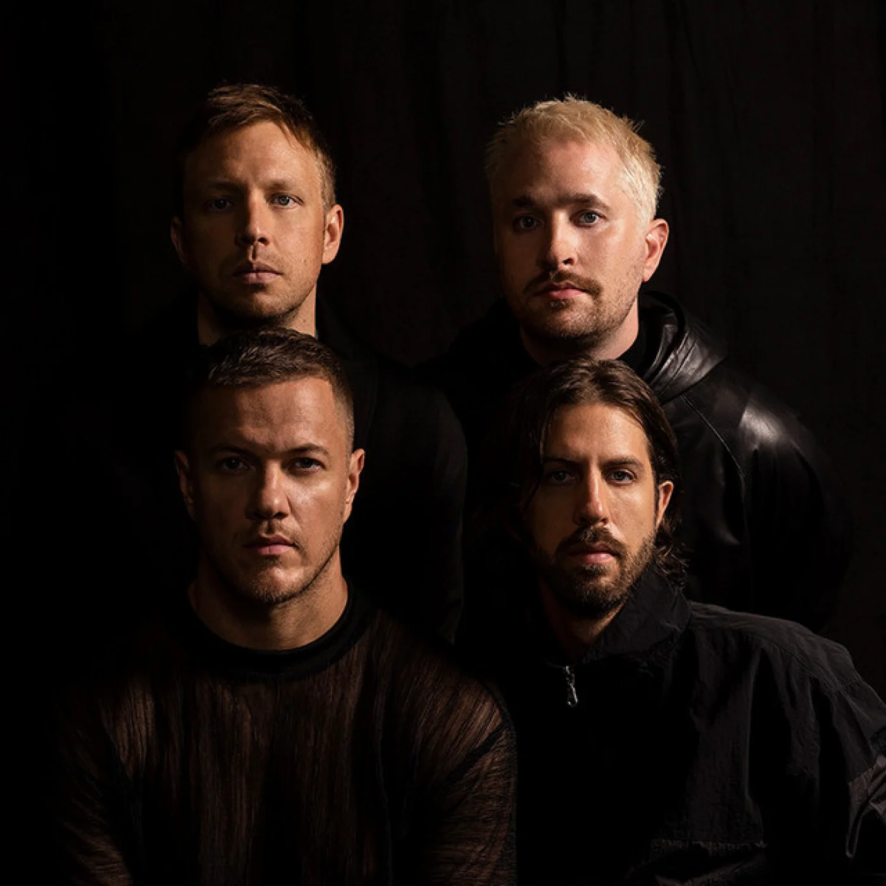

Sabias que...
- Durante uma apresentação em um clube pequeno o Imagine Dragons conheceu Tyler Robinson, um jovem que lutava contra o cancro, atraídos pela personalidade forte do jovem a banda se envolveu com o fã.
- Em 2013 Robinson faleceu e a banda junto com a família do garoto criou a Tyler Robinson Foundation para ajudar as crianças com cancro.
- Tyler Robinson aparece no final do vídeo de Demons, e é emocionante.

- O nome "Imagine Dragons" não tem um significado específico, mas foi criado de forma aleatória pelo vocalista Dan Reynolds. A banda queria um nome único e memorável.
- Seu álbum de estreia, "Night Visions", lançado em 2012, trouxe o sucesso massivo com músicas como "Radioactive" e "Demons", tornando-se um dos álbuns mais vendidos daquele ano.
- Antes de assinarem com uma grande gravadora, os Imagine Dragons lançaram seus primeiros EPs de forma independente, aproveitando as plataformas digitais para compartilhar sua música.
- A banda costumava tocar quatro noites por semana no O'Shea’s, LV.
- "Radioactive" quebrou recordes históricos, a música ficou mais de 87 semanas na Billboard Hot 100, um dos maiores recordes de permanência na parada na época.
- Explodiram com uma música que quase foi descartada “It’s Time” foi o primeiro sucesso da banda e foi gravada no sótão do vocalista Dan Reynolds, com recursos bem limitados.